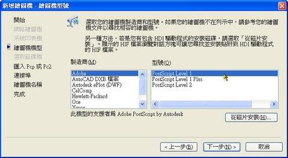
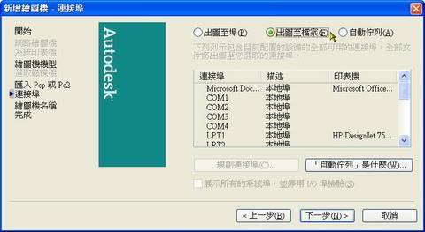
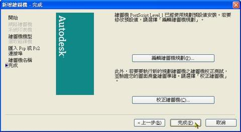

匯出eps檔案有二種方法：使用 出圖成eps檔 的方式即可滿足你的需求。
此方法相容於 Office(Word及Excel) 、coreldarw 及 Adobe Photoshop ，最重要的是都不會失真呢~
★方法1：「檔案」功能表：「匯出」。EPS：壓縮的 PostScrip 檔
但是他是由螢幕的繪圖區範圍決定匯出的eps檔案大小，比較不好控制版面，所以可能必須在經過美工軟理裁切檔案。
方法2：出圖eps檔步驟如下:
1.使用出圖eps檔案方式，必須新增虛擬繪圖機，優點可自由匯出選取範圍，並控制比例準確的匯出有比例的檔案。
a.「檔案」功能表：「繪圖機管理員」
b.選擇「新增繪圖機精靈」→ 下一步

c.我的電腦 → 下一步 → 製造商adobe、型號PostScript Level 1 → 下一步 → 下一步 →

選擇出圖至檔案 → 下一步 → 下一步 →完成。

d.出圖時設備請選擇 PostScript Level 1.pc3 即可。
補充：相關主題+影片操作
AutoCAD + CorelDRAW